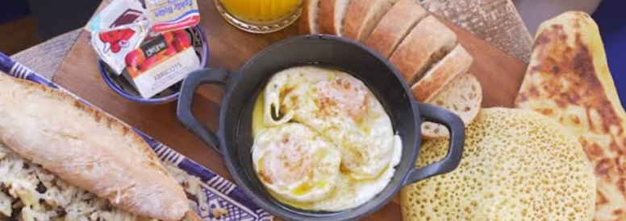
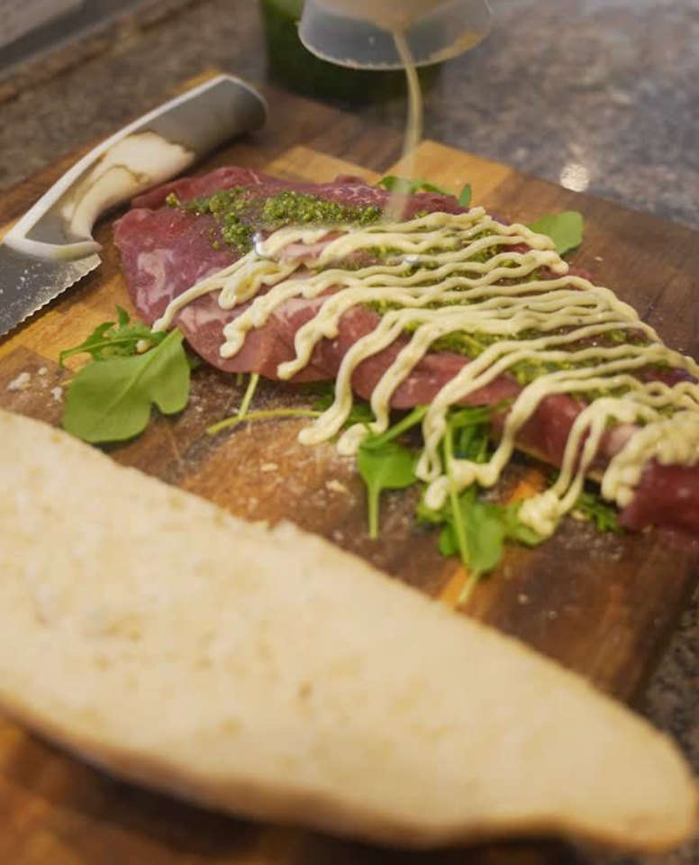

Wat zal het zijn?
Ontbijt, broodjes, salades en meer. Scroll door de kaart of zoek direct op wat je wilt.
Ontbijt & main

Shakshuka, burgers en meer
Shakshuka
€10,95Heerlijk vegetarisch pannetje met ei, paprika en ui (+ extra ei €1,30).
Smashed avocado
€11,95Smashed avocado met gegrilde kippendijfilet, gekaramelliseerde ui, pijnboompitten en parmigiano reggiano.
Moon burger
€13,95Kipburger, zoete aardappelfriet, tomaat, gekaramelliseerde ui en cheddar (+ extra ei €1,30).
Beef burger
€13,95Gehaktburger, zoete aardappelfriet, tomaat, cheddar en gekaramelliseerde ui (+ extra ei €1,30).
Breakfast bowls
Fris en vol fruit
Acai
€10,95Breakfast bowl.
Orange – Mango
€10,95Breakfast bowl.
Broodjes

Vers belegd
Carpaccio
€8,95Carpaccio, rucola, pijnboompitten, pesto, parmigiano reggiano en truffelmayo.
Brie
€7,95Brie, slamelange, walnoten en komkommer.
Pittige tonijn
€8,95Huisgemaakte tonijnsalade, slamelange, jalapeño, kappertjes en avocado.
Tonijn
€8,95Huisgemaakte tonijn, appel, olijven en gedroogde tomaat.
Zalm
€9,95Gerookte zalm, roomkaas, avocado, komkommer en slamelange.
Salades
Fris en gezond
Carpaccio
€13,95Carpaccio, rucola, pesto, pijnboompitten en truffelmayo.
Caesar kip
€12,95Gegrilde kip, huisgemaakte croutons, pijnboompitten en parmigiano reggiano.
Gegrilde groente
€11,95Aubergine, paprika, courgette, pijnboompitten en feta.
Starters
Om te delen (of niet)
Soep van de dag
€5,95Bruschetta
€4,95Garnalenkroket
€8,95Gamba’s in aioli
€7,95Bitterballen
€5,50Friet
€4,95Zoete aardappel friet
€4,95Pancakes
Geserveerd met blauwe bessen, aardbei, poedersuiker en stroop
Pancake naturel
€7,95Met blauwe bessen, aardbei, poedersuiker en stroop.
Pancake choco
€8,95Met blauwe bessen, aardbei, poedersuiker en stroop.
Pankids
€3,95Kleine pancake voor de kids.
Hot drinks
Koffie, thee en meer
Espresso
€2,50Double espresso
€3,75Americano
€2,75Caffe latte
€3,75Latte macchiato
€3,75Cappuccino
€3,25Hot chocolate
€3,50Mint tea
€3,50Drinks
Fris, sap en melk
Coca Cola
€2,95Coca Cola Zero
€2,95Fanta
€2,95Ginger ale
€2,95Pineapple juice
€2,95Apple juice
€2,95Chocomel
€3,25Fristi
€3,25Sourcy
€2,50Sourcy sparkling
€2,50Niets gevonden. Probeer een ander woord.